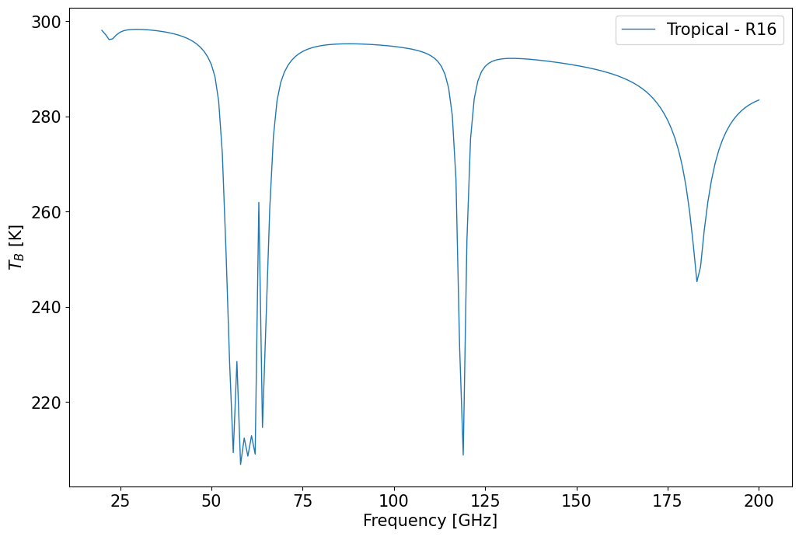

Generic example#
Import python package for plotting.#
[2]:
# This requires jupyter-matplotlib a.k.a. ipympl.
# ipympl can be install via pip or conda.
%matplotlib inline
import matplotlib.pyplot as plt
plt.rcParams.update({'font.size': 15})
import matplotlib.ticker as ticker
from matplotlib.ticker import ScalarFormatter
import numpy as np
np.seterr('raise')
[2]:
{'divide': 'warn', 'over': 'warn', 'under': 'ignore', 'invalid': 'warn'}
Import pyrtlib package#
[3]:
from pyrtlib.climatology import AtmosphericProfiles as atmp
from pyrtlib.tb_spectrum import TbCloudRTE
from pyrtlib.utils import ppmv2gkg, mr2rh
[4]:
atm = ['Tropical',
'Midlatitude Summer',
'Midlatitude Winter',
'Subarctic Summer',
'Subarctic Winter',
'U.S. Standard']
Load standard atmosphere (low res at lower levels, only 1 level within 1 km) and define which absorption model will be used.
[5]:
z, p, d, t, md = atmp.gl_atm(atmp.TROPICAL)
gkg = ppmv2gkg(md[:, atmp.H2O], atmp.H2O)
rh = mr2rh(p, t, gkg)[0] / 100
mdl = 'R16'
Performing upwelling brightness temperature calculation#
Default calculatoin consideres no cloud
[6]:
ang = np.array([90.])
frq = np.arange(20, 201, 1)
nf = len(frq)
Setup matplotlib plot
[7]:
fig, ax = plt.subplots(1, 1, figsize=(12,8))
ax.set_xlabel('Frequency [GHz]')
ax.set_ylabel('${T_B}$ [K]')
rte = TbCloudRTE(z, p, t, rh, frq, ang)
rte.init_absmdl(mdl)
df = rte.execute()
df = df.set_index(frq)
df.tbtotal.plot(ax=ax, linewidth=1, label='{} - {}'.format(atm[atmp.TROPICAL], mdl))
ax.legend()
plt.show()

Print dataframe
[8]:
df
[8]:
| tbtotal | tbatm | tmr | tmrcld | tauwet | taudry | tauliq | tauice | |
|---|---|---|---|---|---|---|---|---|
| 20 | 298.109969 | 0.0 | 286.950133 | 0.0 | 0.120344 | 0.012855 | 0.0 | 0.0 |
| 21 | 297.245630 | 0.0 | 286.301043 | 0.0 | 0.188808 | 0.013524 | 0.0 | 0.0 |
| 22 | 296.153517 | 0.0 | 285.000663 | 0.0 | 0.261848 | 0.014259 | 0.0 | 0.0 |
| 23 | 296.340241 | 0.0 | 285.636022 | 0.0 | 0.257913 | 0.015066 | 0.0 | 0.0 |
| 24 | 297.158441 | 0.0 | 286.738496 | 0.0 | 0.202308 | 0.015954 | 0.0 | 0.0 |
| ... | ... | ... | ... | ... | ... | ... | ... | ... |
| 196 | 281.727042 | 0.0 | 281.270840 | 0.0 | 3.672975 | 0.025784 | 0.0 | 0.0 |
| 197 | 282.281780 | 0.0 | 281.731501 | 0.0 | 3.460000 | 0.025956 | 0.0 | 0.0 |
| 198 | 282.747798 | 0.0 | 282.109277 | 0.0 | 3.289848 | 0.026129 | 0.0 | 0.0 |
| 199 | 283.139746 | 0.0 | 282.420450 | 0.0 | 3.152710 | 0.026302 | 0.0 | 0.0 |
| 200 | 283.469554 | 0.0 | 282.677693 | 0.0 | 3.041424 | 0.026476 | 0.0 | 0.0 |
181 rows × 8 columns
Performing calculation for R03 absorption model#
[9]:
mdl = 'R03'
rte.init_absmdl(mdl)
df_r03 = rte.execute()
df_r03 = df_r03.set_index(frq)
Add brigthness temperature values as new column
[10]:
df['delta'] = df.tbtotal - df_r03.tbtotal
[11]:
df
[11]:
| tbtotal | tbatm | tmr | tmrcld | tauwet | taudry | tauliq | tauice | delta | |
|---|---|---|---|---|---|---|---|---|---|
| 20 | 298.109969 | 0.0 | 286.950133 | 0.0 | 0.120344 | 0.012855 | 0.0 | 0.0 | -0.005362 |
| 21 | 297.245630 | 0.0 | 286.301043 | 0.0 | 0.188808 | 0.013524 | 0.0 | 0.0 | -0.055802 |
| 22 | 296.153517 | 0.0 | 285.000663 | 0.0 | 0.261848 | 0.014259 | 0.0 | 0.0 | -0.149566 |
| 23 | 296.340241 | 0.0 | 285.636022 | 0.0 | 0.257913 | 0.015066 | 0.0 | 0.0 | -0.084145 |
| 24 | 297.158441 | 0.0 | 286.738496 | 0.0 | 0.202308 | 0.015954 | 0.0 | 0.0 | -0.001669 |
| ... | ... | ... | ... | ... | ... | ... | ... | ... | ... |
| 196 | 281.727042 | 0.0 | 281.270840 | 0.0 | 3.672975 | 0.025784 | 0.0 | 0.0 | -0.166236 |
| 197 | 282.281780 | 0.0 | 281.731501 | 0.0 | 3.460000 | 0.025956 | 0.0 | 0.0 | -0.158865 |
| 198 | 282.747798 | 0.0 | 282.109277 | 0.0 | 3.289848 | 0.026129 | 0.0 | 0.0 | -0.152032 |
| 199 | 283.139746 | 0.0 | 282.420450 | 0.0 | 3.152710 | 0.026302 | 0.0 | 0.0 | -0.145768 |
| 200 | 283.469554 | 0.0 | 282.677693 | 0.0 | 3.041424 | 0.026476 | 0.0 | 0.0 | -0.140071 |
181 rows × 9 columns
Difference between R16 and R03 brightness temperature
[12]:
fig, ax = plt.subplots(1, 1, figsize=(12,8))
ax.set_xlabel('Frequency [GHz]')
ax.set_ylabel('$\Delta {T_B}$ [K]')
df.delta.plot(ax=ax, figsize=(12,8), label='$\Delta {T_B}$ (R16-R03)')
ax.legend()
plt.show()
Performing downwelling brightness temperature calculation#
[13]:
fig, ax = plt.subplots(1, 1, figsize=(12,8))
ax.set_xlabel('Frequency [GHz]')
ax.set_ylabel('${T_B}$ [K]')
rte.satellite = False
df_from_ground = rte.execute()
df_from_ground = df_from_ground.set_index(frq)
df_from_ground.tbtotal.plot(ax=ax, linewidth=1, label='{} - {}'.format(atm[atmp.TROPICAL], mdl))
ax.legend()
plt.show()
[14]:
df_from_ground
[14]:
| tbtotal | tbatm | tmr | tmrcld | tauwet | taudry | tauliq | tauice | |
|---|---|---|---|---|---|---|---|---|
| 20 | 38.100580 | 36.106575 | 287.782656 | 0.0 | 0.119654 | 0.012748 | 0.0 | 0.0 |
| 21 | 53.602815 | 51.750325 | 287.549723 | 0.0 | 0.183271 | 0.013396 | 0.0 | 0.0 |
| 22 | 68.634754 | 66.918654 | 286.872703 | 0.0 | 0.249677 | 0.014107 | 0.0 | 0.0 |
| 23 | 68.966560 | 67.268116 | 287.380748 | 0.0 | 0.249866 | 0.014887 | 0.0 | 0.0 |
| 24 | 58.518276 | 56.754139 | 288.083580 | 0.0 | 0.201670 | 0.015745 | 0.0 | 0.0 |
| ... | ... | ... | ... | ... | ... | ... | ... | ... |
| 196 | 290.020626 | 290.013156 | 297.081277 | 0.0 | 3.697474 | 0.025150 | 0.0 | 0.0 |
| 197 | 288.152409 | 288.143310 | 296.859264 | 0.0 | 3.486909 | 0.025315 | 0.0 | 0.0 |
| 198 | 286.380803 | 286.370182 | 296.671482 | 0.0 | 3.318905 | 0.025481 | 0.0 | 0.0 |
| 199 | 284.742167 | 284.730168 | 296.513609 | 0.0 | 3.183692 | 0.025648 | 0.0 | 0.0 |
| 200 | 283.256287 | 283.243076 | 296.381489 | 0.0 | 3.074147 | 0.025815 | 0.0 | 0.0 |
181 rows × 8 columns